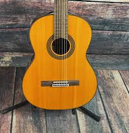
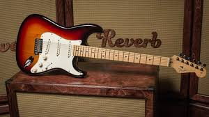
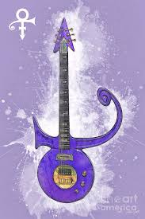
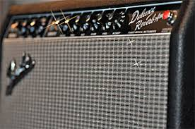
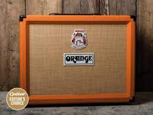
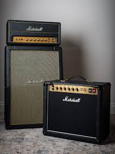

The steel-string acoustic guitar is a modern form of guitar that descends from the gut-strung Romantic guitar, but is strung with steel strings for a brighter, louder sound. Like the modern classical guitar, it is often referred to simply as an acoustic guitar. The most common type is often called a flat top guitar, to distinguish it from the more specialized archtop guitar and other variations.

The classical guitar (also known as the nylon-string guitar or Spanish guitar) is a member of the guitar family used in classical music. An acoustic wooden string instrument with strings made of gut or nylon, it is a precursor of the modern acoustic and electric guitars, both of which use metal strings. Classical guitars are derived from the Spanish vihuela and gittern in the fifteenth and sixteenth century, which later evolved into the seventeenth and eighteenth-century Baroque guitar and later the modern classical guitar in the mid-nineteenth century.
Electric

The Fender Stratocaster, colloquially known as the Strat, is a model of electric guitar designed from 1952 into 1954 by Leo Fender, Bill Carson, George Fullerton and Freddie Tavares. The Fender Musical Instruments Corporation has continuously manufactured the Stratocaster since 1954. It is a double-cutaway guitar, with an extended top "horn" shape for balance. Along with the Gibson Les Paul, Gibson SG and Fender Telecaster, it is one of the most-often emulated electric guitar shapes.
The Gibson Les Paul is a solid body electric guitar that was first sold by the Gibson Guitar Corporation in 1952. The guitar was designed by factory manager John Huis and his team with input from and endorsement by guitarist Les Paul. Its typical design features a solid mahogany body with a carved maple top and a single cutaway, a mahogany set-in neck with a rosewood fretboard, two pickups with independent volume and tone controls, and a stoptail bridge, although variants exist.

The Cloud guitar was manufactured specifically for Purple Rain by luthier Dave Rusan, who was based in Minneapolis at the time. Rusan was working at Knut-Koupée Music, a store owned by local guitarist Jeff Hill, when he was asked to create the iconic guitar. Prince requested the guitar be designed with inspiration from the bass owned by his childhood friend and former bass player, André Cymone. Cymone can be seen playing the original bass in the clip for ‘Why You Wanna Treat Me So Bad’. However, aside from this information, Rusan didn’t receive a great deal of guidance from the famously shy Prince when creating the guitar.
Amps

Fender amplifiers are a series of electric instrument amplifiers renowned by musicians worldwide. The Fender Musical Instruments Corporation has continuously manufactured guitar amplifiers since their foundation, Leo Fender began building guitar amplifiers before he started manufacturing electric guitars. The first of these were the K&F models, produced between 1945 and 1946. Fender amplifiers would become favourites of many famous guitarists such as Stevie Ray Vaughan, Jimi Hendrix and Eric Clapton, helping them pioneer their sounds.

Orange Music Electronic Company is an English amplifier manufacturing company. The amplifiers have a distinctive sound and bright orange Tolex-like covering their heads and speaker cabinets.

Marshall Amplification is a British company that designs and manufactures music amplifiers, speaker cabinets, brands personal headphones and earphones, a record label and, having acquired Natal Drums, drums and bongos. It was founded by drum shop owner and drummer Jim Marshall, and is now based in Bletchley, Milton Keynes, Buckinghamshire. Marshall's guitar amplifiers are among the most recognised in the world. Their signature sound, characterized by sizzling distortion and "crunch," was conceived by Marshall after guitarists, such as Pete Townshend, visited Marshall's drum shop complaining that the guitar amplifiers then on the market didn't have the right sound or enough volume.[4] After gaining a lot of publicity, Marshall guitar amplifiers and loudspeaker cabinets were sought by guitarists for this new sound and increased volume. Many of the current and reissue Marshall guitar amplifiers continue to use valves, as is common in this market sector. Marshall also manufactures less expensive solid-state, hybrid (vacuum tube and solid state) and modelling amplifiers.